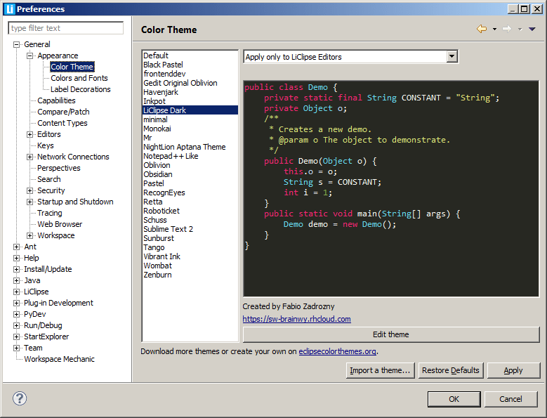

Change Color Theme
To change the color theme on LiClipse, access window > Preferences > General > Appearance > Color theme

There's a combo where it's possible to select how those changes will be applied to editors:
- Apply only to LiClipse editors: When enabled, the theme selected will be applied only to LiClipse editors, not to other editors (such as PyDev, JDT, etc.) nor views.
- Apply to all editors: When enabled, the theme selected will be applied to all the editors (such as PyDev, JDT, etc.) but not to any view.
- Apply to all editors and known views: When selected, all the parts known about will be themed (editor and views checked for themeing), but it won't apply the theme to views that haven't been registered.
- Apply to the whole IDE: This option will apply the theme to all views and dialogs in the IDE without restriction -- although most views and dialogs should work, it's possible that some dialog wasn't meant to be themed, which would make its appearance look bad in this case.
Note that if you choose the options to apply to all the known views / apply to the whole IDE, you
may have to restart Eclipse for changes to be successful.